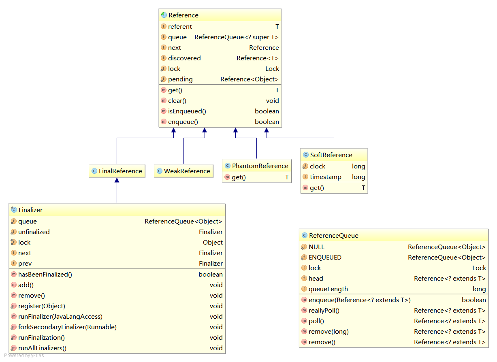

java.lang.ref
这个包以前很少用到，因为要看WeakHashMap的缘故不得不学写了一下。
java.lang.ref 这个包提供了与垃圾回收不同等级交互的引用对象类。（很拗口是吧？这说明是我自己翻译的）
ref包的UML图： 
接下来我们按引用由弱到强来介绍这个包下的类。
ReferenceQueue
ReferenceQueue引用队列，在检测到合适的可达性更改后，垃圾回收器将已注册的引用对象添加到该队列中。
从源码看它的功能比较简单，就是实现了一个入队、出队操作，组合后对外暴露出poll和remove接口。
ReferenceQueue源码：
// 队列的实现主要靠Reference自身的链表结构
private volatile Reference<? extends T> head = null;
private long queueLength = 0;
private Lock lock = new Lock();
// 入队实现，注意是加锁的（出队删除设计到修改的操作都是加锁的）
boolean enqueue(Reference<? extends T> r) { /* Called only by Reference class */
synchronized (lock) {
// Check that since getting the lock this reference hasn't already been
// enqueued (and even then removed)
ReferenceQueue<?> queue = r.queue;
if ((queue == NULL) || (queue == ENQUEUED)) {
return false;
}
assert queue == this;
r.queue = ENQUEUED;
r.next = (head == null) ? r : head;
head = r;
queueLength++;
if (r instanceof FinalReference) {
sun.misc.VM.addFinalRefCount(1);
}
lock.notifyAll();
return true;
}
}
Reference
SoftReference
SoftReference“软引用”，当SoftReference所指向的对象，没有强引用指向它是，会在内存停留一段时间，垃圾回收器会根据JVM内存情况，以及SoftReference 的get方法调用情况，来决定是否回收。
SoftReference有如下特征：
- 软引用使用get()方法去的对象的强引用，从而访问该对象；
- 软引用指向的对象会按照JVM内存的使用情况来决定是否回收；
- 软引用可以避免Heap不足引发的异常。
/**
* SoftReference 源码
*/
public class SoftReference<T> extends Reference<T> {
// 时间戳，由垃圾回收器进行更新
static private long clock;
// 每次调用get方法时，都会更新。VM可能会根据它来决定是否进行回收，但并不强制要求
private long timestamp;
public SoftReference(T referent) {
super(referent);
this.timestamp = clock;
}
public SoftReference(T referent, ReferenceQueue<? super T> q) {
super(referent, q);
this.timestamp = clock;
}
// 可以看到timestamp的更新
public T get() {
T o = super.get();
if (o != null && this.timestamp != clock)
this.timestamp = clock;
return o;
}
}
/**
* 示例
*/
public class SoftReferenceTest {
public static void main(String[] args) throws InterruptedException {
Bean bean = new Bean("123", 1);
SoftReference<Bean> ph = new SoftReference<>(bean);
System.out.println(ph.get());
bean = null;
System.gc();
System.runFinalization();
Thread.sleep(10000);
System.out.println(ph.get()); //不一定会回收
}
}
WeakReference
WeakReference“弱引用”与上面的软引用类似，区别仅限于垃圾回收的选择上。
PhantomReference
PhantomReference“虚引用”，虚引用的对象，在回收器确定其可另外回收后，被加入队列。它并不用于获取目标对象的引用，而是主要用来 跟踪对象被垃圾回收的状态 ，通过查看引用队列(referenceQueue)是否包含对象所对应的虚引用来判断他是否 即将 被垃圾回收。
// PhantomReference源码：
public class PhantomReference<T> extends Reference<T> {
// 永远返回null
public T get() {
return null;
}
// 构造的时候，必须要传入ReferenceQueue，因为还需要用queue来实现跟踪回收的状态
public PhantomReference(T referent, ReferenceQueue<? super T> q) {
super(referent, q);
}
}
// 示例
public class PhantomReferenceTest {
public static void main(String[] args) throws InterruptedException {
Bean bean = new Bean("123", 1);
ReferenceQueue<Bean> queue = new ReferenceQueue<>();
PhantomReference<Bean> ph = new PhantomReference<>(bean, queue);
System.out.println(ph.get()); //null
System.out.println(queue.poll()); //null
bean = null;
// 示例用，并不能保证每次结果都一直
System.gc();
System.runFinalization();
Thread.sleep(10000);
System.out.println(queue.poll()==ph); //true
}
}
引用类型特征总结
| 引用类型 | 却的目标对象的方式 | 垃圾回收条件 | 是否可能内存泄露 |
|---|---|---|---|
| 强引用 | 直接调用 | 不回收 | 存在 |
| SoftReference软引用 | get() | 视内存使用情况 | 不存在 |
| WeakReference弱引用 | get() | 永远回收 | 不存在 |
| PhantomReference虚引用 | 无法取得 | 不回收 | 存在 |
它们最大的不同，在于进入队列(ReferenceQueue)的时机。
-
SoftReference：在运行对象的finalize方法前，会将其加入队列 -
WeakReference：同上 -
FinalReference： -
PhantomReference：在GC开始时，直接调用finalize方法，但不会加入队列，只有在真正对象被GC清除的时候，才计入队列。
网上看到这样（见最后的评论） 的描述，所谓Strong、Soft、Weak、Phantom描述的是对象的可达性，只有完全不可达时，对象才会被回收。
对象回收会至少经过两个周期
- 前finalize期，可达性从Strong -> Soft -> Weak
- finlize期，对象被finalized之后，对象的可达性为finalize
因此JDK中有5个可达性(有强到弱)：Strong、Soft、Weak、Finalize、Phantom。
Pahtom是在finalize之后，所以get操作用于返回null。
回收的区别
public class HeapOOMtest {
// 测试前记得在VM argument 加上-Xmx2m -Xms2m
public static void main(String[] args) {
HeapOOMtest test = new HeapOOMtest();
// test.strongReferenceTest(); // throw java.lang.OutOfMemoryError: Java heap space
// test.softReferenceTest(); // null
// test.weakReferenceTest(); // null
// test.phantomReferenceTest(); // throw java.lang.OutOfMemoryError: Java heap space
}
public void strongReferenceTest() {
Bean[] referent = new Bean[100000];
for (int i = 0; i < referent.length; i++) {
referent[i] = new Bean("mybean:" + i, 100);//throw java.lang.OutOfMemoryError: Java heap space
}
}
public void softReferenceTest() {
Reference<Bean>[] referent = new SoftReference[100000];
ReferenceQueue<Bean> queue = new ReferenceQueue<Bean>();
for (int i = 0; i < referent.length; i++) {
referent[i] = new SoftReference<Bean>(new Bean("mybean:" + i, 100),queue);
}
System.out.println(referent[100].get());// “null”
//System.out.println(queue.poll());
}
public void weakReferenceTest() {
Reference<Bean>[] referent = new WeakReference[100000];
ReferenceQueue<Bean> queue = new ReferenceQueue<Bean>();
for (int i = 0; i < referent.length; i++) {
referent[i] = new WeakReference<Bean>(new Bean("mybean:" + i, 100),queue);
}
System.out.println(referent[100].get());// “null”
//System.out.println(queue.poll());
}
public void phantomReferenceTest() {
Reference<Bean>[] referent = new PhantomReference[100000];
ReferenceQueue<Bean> queue = new ReferenceQueue<Bean>();
for (int i = 0; i < referent.length; i++) {
referent[i] = new PhantomReference<Bean>(new Bean("mybean:" + i,
100), queue);//throw java.lang.OutOfMemoryError: Java heap space
}
System.out.println(referent[100].get());
}
}
总结
通过SoftReference、WeakReference、PhantomReference等三种引用类，我们可以更好地和GC进行交互。比如SoftReference就很适合作为Cache，而PhantomReference则可以让我们通过它的queue来监控GC的运行，从而自定义一些清理工作，原来finalize函数还是有很多局限性的。
日期：2013-8-23、2014-05-26
参考资料：深入探讨 java.lang.ref 包、Understanding Weak References、WeakHashMap example、Soft Reference /Weak Refernce /Phantom Reference / finalize()、理解 Java 的 GC 与 幽灵引用、深入理解ReferenceQueue GC finalize Reference